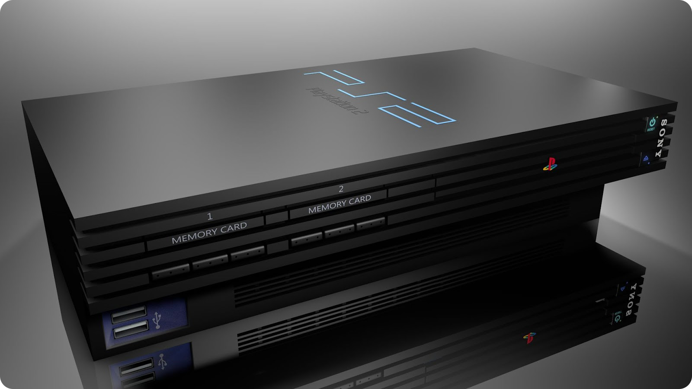

História
O sucessor do PlayStation é anunciado pela Sony em março de 1999 e lançado um ano depois no Japão, em 4 de março de 2000. Na América do Norte, o evento ocorre no dia 26 de outubro do mesmo ano. A notícia causa estrondosa repercussão em todo mundo, a ponto de esvaziar lojas ainda no dia de seu lançamento e, devido a atrasos na fabricação, apenas alguns milhões de pessoas obtiveram o console até o final de 2000. Outra opção era comprar o console na internet através de sites de leilões, como o eBay, onde ele era vendido por até mil dólares.
Inicialmente, o PS2 tem muitas unidades vendidas com base na força da marca PlayStation e da compatibilidade com a versão anterior, com mais de 980.000 unidades comercializadas no Japão em 5 de março de 2000, um dia após o lançamento. Mais tarde, a Sony adiciona novos kits de desenvolvimento para desenvolvedores de jogos e mais unidades de PS2 para os consumidores.
A Sony, ao contrário da Sega durante as vendas do seu Dreamcast, a qual parecia dar maior ênfase ao suporte online apenas aos seus jogos iniciais e, então, coincidindo com o lançamento do Xbox Live, decide criar o periférico PlayStation Network Adapter no final de 2002, enquanto o jogo SOCOM: U.S. Navy SEALs torna-se o primeiro a ter suporte a gameplay online. Por possuir uma saída para a conexão de um HD interno, o Network Adapter possibilitava aos usuários baixar expansões, mapas, arquivos e conteúdos adicionais para certos jogos.